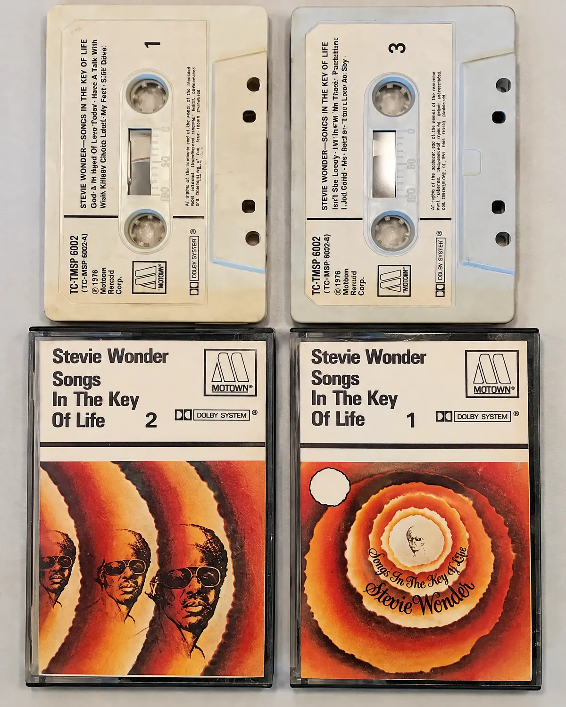
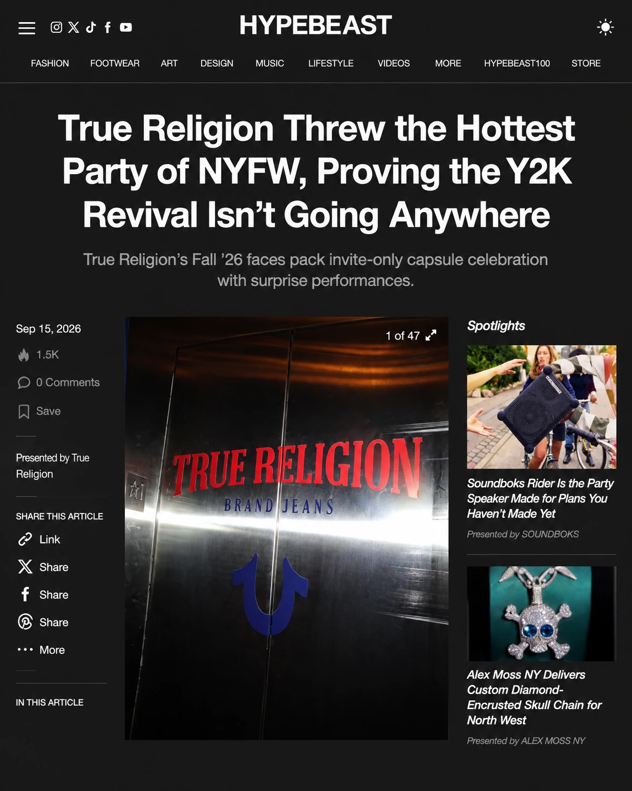
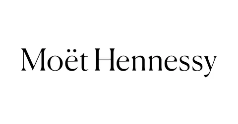
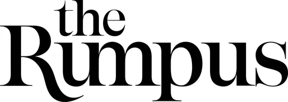
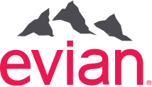

Embedded leadership
We become an extension of your leadership team, with hands-on counsel close to the decisions that matter.
01 / THE FOUNDATION
Senior-led PR & brand advisory. Built to hold weight.
Explore our capabilities02 We are Concrete
The Concrete Group is a senior-led global PR and brand advisory agency. We work as an extension of your executive team, connecting business strategy with the conversations that shape credibility and culture.
Communications strategy, social media, crisis communications, talent, influencer and brand partnerships.
03 Built different
A model built around your business, with senior leadership where it matters most.
We become an extension of your leadership team, with hands-on counsel close to the decisions that matter.
Senior talent is selected around your industry, your brief and the challenge in front of you.
Specialized expertise comes together around the needs of each engagement.
We work across your agency partners and integrated agency team to maintain a unified strategic presence.
04 Areas of expertise
Deep experience across industries. A connected view of what is happening now and what moves markets.
05 / THE LANDSCAPE
A fragmented brand story is easy to miss. We unite communications around a lasting perception of who you are and why you matter.
Give people a credible reason to pay attention.
Build continuity across media, platforms and communities.
Find a meaningful role in the conversations your audience values.
06 PR 4.0
How we think about PR must evolve with the way news and information travel. We connect publicity, creators, social and experiences with the cultural spaces that shape the mainstream.
Credibility
& culture.
07 Audience first
Audience behaviour guides the communications plan. Where people discover, who they trust and how they participate matter more than a channel checklist.
Where does the audience encounter new ideas?
Find the right entry point.Whose perspective carries weight?
Build around credible voices.What makes people respond, share or take part?
Give the story a role in their lives.08 When we show up
From a new beginning to a critical inflection point, we help your story meet the moment.

Introduce something new and help the market understand why it matters.
Give innovation a clear place in your brand’s next chapter.
Bring precision and presence when the world is watching.
Make the strategic rationale behind your evolution clear.
Build founder and C-suite presence through a credible point of view.
Stabilize the situation, protect your community and ensure your truth is heard.
09 Always-on publicity
A sustained approach to finding the stories your brand is equipped to tell.

HYPEBEAST · SEPTEMBER 15, 2026
Monitor media and culture for relevant conversations and fresh angles.
Find underused brand assets and legacy with the potential to become meaningful story hooks.
Connect the opportunity to a credible contribution your brand can make.
11 Our experience
Experience across brands, partnerships and cultural moments.



12 / THE NEXT CHAPTER
Tell us what is next for your business. Let’s build the credibility and cultural relevance to support it.
YourAgency@theconcretegrp.com
SENIOR-LED PR
10 Social amplification
From attention
to participation.
Bring a consistent point of view to the feed, the creator relationship and the community around your brand.
Influencer partnerships
Vet and manage talent whose values align with your brand.
Social strategy
Define how your brand shows up across platforms and communities.
Trend interception
Identify timely opportunities to enter and lead relevant conversations.
Community building
Create engagement frameworks that turn passive followers into active advocates.